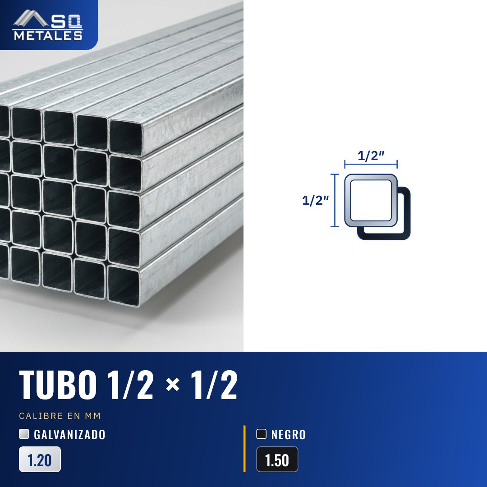

Tubo 1/2 × 1/2
Tubo 1/2 × 1/2, medida en pulgadas. Galvanizado en calibre 1.20 mm. Negro en calibre 1.50 mm. Para estructuras, portones, verjas, muebles y techos. Decinos la cantidad y el calibre y te cotizamos. Retirás en Coronado, Tibás, Alajuela y Guápiles.
SQ-TUB-01